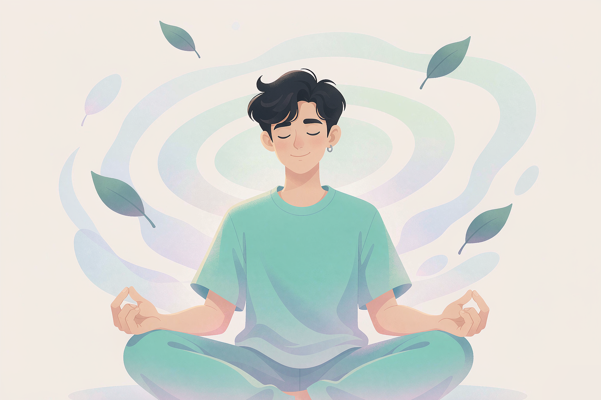

让身心休息一下。简单的呼吸训练和冥想引导，帮助你找回平静。

4-7-8呼吸法，帮助身体放松，缓解紧张情绪
约5分钟 入门缓解紧张从头到脚放松身体，释放紧张与疲惫
约10分钟 入门睡前放松专注于当下，让思绪慢慢安静下来
约8分钟 入门专注当下通过五感回到当下，缓解焦虑
约3分钟 焦虑急救短时快速慢下来，感受每一步脚底的触感，把正念带进身体
约5分钟 需要站立释放紧绷像看云朵一样看待想法，观察而不卷入
约3分钟 情绪觉察想法松动不想做完整练习的时候，玩一小会儿，也能让心轻轻落下
慢慢收集星光，没有失败，只是放松。
点我开始轻轻点一下，让涟漪把烦恼带走。
点我开始接住飘落的星星，没有输赢，只有闪烁。
点我开始点一点云朵，让它化作小泡泡飘走。
点我开始